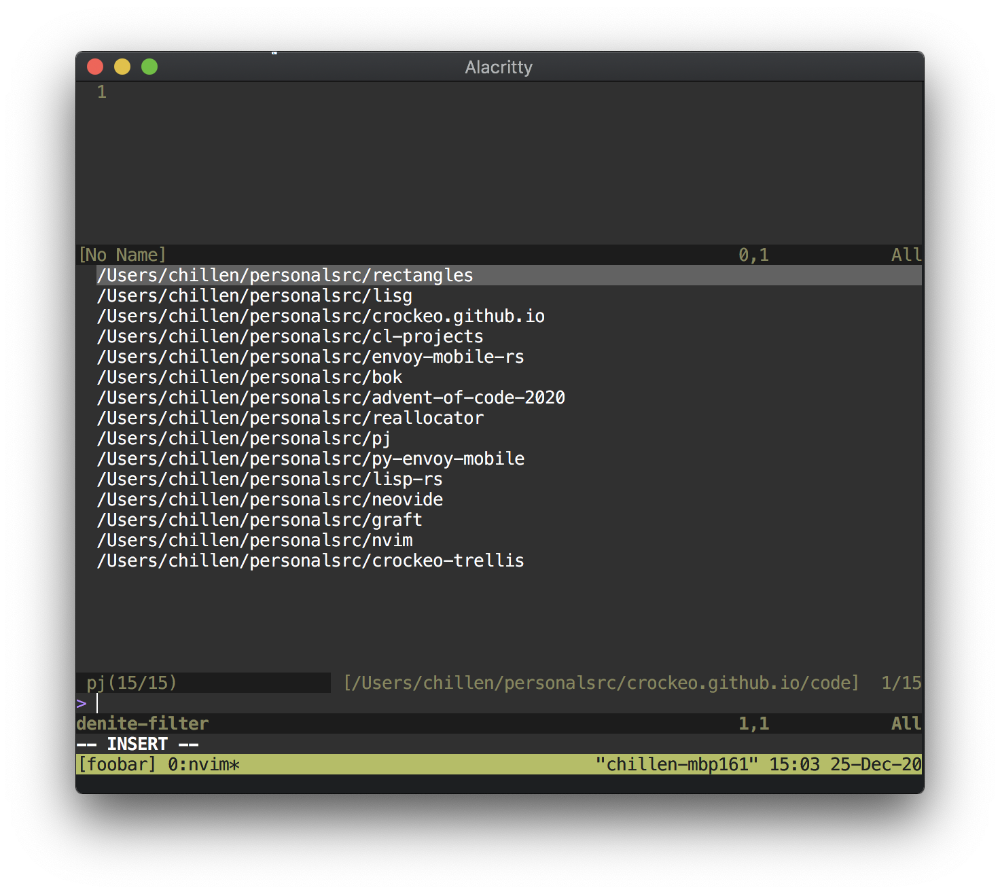

break projects
Written: 2020-12-25
So it's the holidays and it turns out I like programming a little to much. I've been working on some things during my time off from work, and I want to give a little spotlight to each of them.
In the beginning of 2020, back before we knew what coronavirus was, I went back to the Recurse Center for a "half batch"—a 6-week (instead of the normal 12-week) programming retreat where I could do, more or less, anything I wanted. I met another recurser whose online moniker is neeasade. If you click that link (and you should), you'll see they're a ricer and an Emacs-er. To make a long story short, neeasade brought me into the fold.
Now almost a full year later, I switched from Emacs to Neovim. This shift was precipitated by the fact that my Emacs kept on freezing. The normal advice of sending a SIGUSR2 to enter the debugger didn't end up working and so I turned to lldb which showed that Emacs was waiting for user input, super helpful. I ended up tracking down the issue to some combination of lsp-mode and clangd but, frankly, could not be bothered to upstream a fix.
It also just so happens that I believe in Neovim more than I do Emacs. That's a bit of a charged statement, so let me explain a little bit.
Unix Process Model
I like the Unix model of compositional processes. Emacs users tend to be LISP programmers and LISP programmers tend to like long-lived monolithic LISP machines. In turn, Emacs offers a way to encapsulate a long-lived monolithic LISP machine into your friendly little Unix system. The common wisdom with Emacas is that it can, and eventually should, subsume most tasks you perform on your computer.
I don't really like that. I want a bunch of tools, each of which with its own, well-scoped job, to compose into a whole more powerful than their parts. Vim already offers that, to some degree, but Neovim takes it to another level with its MessagePack socket-based API. Processes totally external to Neovim can interact with almost every single part of the editor. This interaction very well may be the killer feature of Neovim: is is naturally multi-process and polylingual, allowing people to use whatever tools are best suited for a particular job.
Threads
This is a short, but sweet, one: Neovim is multithreaded. Vim is not, Emacs is not. Modern computers get much of their computing power from the existence of multiple cores—it's not like editors really need that power 99% of the time, but if I'm going to bet on an editor I'd like it to be an editor that's well-positioned for the future of computers.
I Hate Vimscript (and Emacs Lisp is O.K.)
I really, really do not enjoy working in Vimscript. It's not really a knock against the language itself, so much as a knock against having to learn a new programming language to interact with my editor. I'd much rather use an editor I can configure with an existing programming language, even if it's not my favorite.
Emacs Lisp, especially with the introduction of lexical binding back in Emacs 23, is pretty much Just Another LISP-2™. As someone who was briefly into Common Lisp this wasn't so bad. I'm not really on my Lisp kick anymore for Reasons™ (see: it's inscrutable) and so Emacs Lisp isn't really doing it for me anymore.
I'm not the biggest fan of Lua but it does it's job: it's an existing programming language and it's readable. My Neovim config is largely Lua (77.1% at time of writing). That percentage will only grow as I get less lazy and migrate Vimscript I was too lazy to before.
Named pj:
$ pj
error: The following required arguments were not provided:
<sentinel-pattern>
USAGE:
pj [OPTIONS] <sentinel-pattern> [root-dirs]...
For more information try --help
I missed one thing during the transition from Emacs to Neovim: projectile. Because an individual Emacs process was long-lived, I needed to navigate between projects during the course of a normal work day. I didn't quite have that problem anymore in Neovim, since I could just open a new window in tmux and move to a new project. However there was one, very specific use-case I was missing: cross-referencing files across projects.
Imagine you work at a company that uses microservices and you're making an RPC from service A to service B. The behavior and API of the RPC is "self-documenting" (i.e. not documented), and so you have to cross-reference code in multiple places:
The code you're writing in service A The interface definition repo your company maintains The code that will be executed in service B
In Emacs my workflow for this was to quite literally just press C-p-p to bring up projectile's "change project" menu. I'd type in the name of the project and then the name of the file and I'm done.
In my Neovim workflow I:
Open a new tmux pane cd to ~/src/<repo name> Open up nerdtree Remember where the file is in the tree structure (varies project-to-project) & navigate to it Open the file
The latter has a higher cognitive load and takes more time to perform. I bias towards optimizing out tedious work so I decided to recreate my projectile workflow.
I found denite.nvim which provides most of projectile's behavior out-of-the-box(-ish). Denite has a concept of "sources" which populate an in-editor option picker which can be described as Python subclasses of denite's source.Base class. For example, denite describes a grep source for finding file contents.
I set up a pj source, set up a keybind (don't mind the commented-out nonsense), and then we were off to the races. It looks something like this:
I know it's a little absurd ot say "I'm not really on my Lisp kick anymore" only to follow it up with "I'm making a Lisp," but I promise I can make it consistent. Reading and writing Lisp can be a pain, but writing a Lisp is great fun.
There's not really much to say, there's nothing special about it and it's very WIP, but I really enjoy it. Rust is a great language to work with on this kind of thing because its abstractions let it mimic functional programming very well.
That doesn't seem so impressive, except for the fact that I'm apparently a masshocist. I didn't like all of the feature-bloated static site generators out there on the web when all I wanted was to turn markdown into HTML with a uniform header and footer.
I also wanted the templater to be super-portable. Like super portable. So I wrote it in ANSI C99: templater.c.